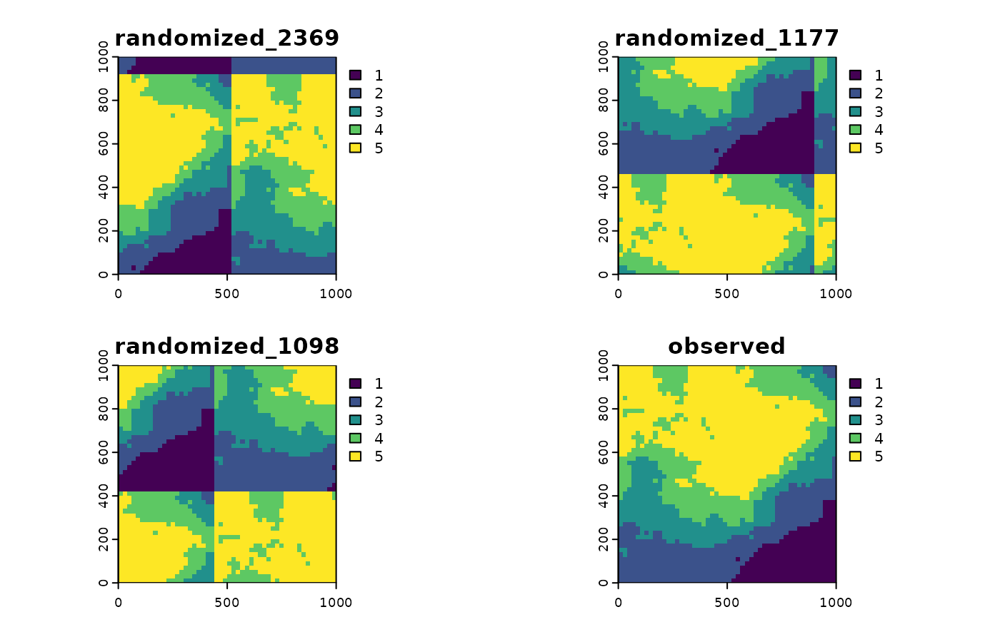

Get started
Maximilian H.K. Hesselbarth
2023-12-14
Source:vignettes/get_started.Rmd
get_started.RmdDesign
The core of shar are functions to simulate null model data by randomizing either the environmental data (i.e., raster) or the locations of species (i.e., point pattern). The null model data is then used to analyse if significant species-habitat associations are present. Additionally, functions to visualize and analyse the results are available as well as some utility functions. The methods are mainly described in Harms et al. (2001), Plotkin et al. (2000), and Wiegand & Moloney (2014). The methods are not necessary complementary, but are rather different approaches to achieve the same result.
Preprocessing of input data
All functions are designed for discrete habitat classes. Thus, if
continuous data is available, this has to be classified to discrete
classes first. classify_habitats provides several ways to
classify the data, such as the Fisher-Jenks algorithm (Fisher 1958,
Jenks & Caspall 1971).
landscape_discrete <- classify_habitats(raster = terra::rast(landscape), n = 5, style = "fisher")Randomize environmental data
There are two functions to randomize the environmental data:
translate_raster() and randomize_raster(). The
first function is a torus translation of the raster, shifting the
habitat map in all four cardinal directions. This is only possible for
rectangular observation areas and results in
R (terra::nrow(terra::rast(landscape)) + 1) * (terra::ncol(terra::rast(landscape)) + 1) - 4
randomized raster (based on number of rows and cols). The other function
randomizes the environmental data using a random-walk algorithm. Here,
the number of randomized raster can be specified using the
n_random argument.
All methods require “fully mapped data” in a sense that
NA cells of the environmental data are allowed only if
these cells cannot accommodate any locations of individuals (e.g., a
water body within a forest area). This needs to be reflected in the
observation window of the point pattern. For the torus translation
method, no NA values are allowed at all.
torus_trans <- translate_raster(raster = landscape_discrete)
random_walk <- randomize_raster(raster = landscape_discrete, n_random = 39)Randomize location data
To randomize the location data (i.e. the point pattern) either
fit_point_process() or reconstruct_pattern()
are available. The first fits a Poisson process or a cluster process to
the data. The second functions reconstructs the spatial characteristics
of the data using pattern reconstruction (Kirkpatrick et al. 1983;
Tscheschel & Stoyan 2006). This is advantageous for point patterns
not describable by simple point process models. For both function, the
number of patterns can be specified by the n_random
argument.
gamma_test <- fit_point_process(pattern = species_b, process = "cluster", n_random = 39)
# (this can takes some time)
reconstruction <- reconstruct_pattern(pattern = species_b, n_random = 39,
e_threshold = 0.05, method = "cluster")Analyse results
The most important function to analyse results is
results_habitat_association(). This function compares the
observed data to the null model data and by that is able to show
significant species-habitat associations. The function work for both,
randomized environmental data or randomized location data.
Please be aware that due to the randomization of the null model data,
results might slightly differ between different randomization approaches
(e.g., fit_point_process()
vs. translate_raster()), and even for repetitions of the
same approach. Thus, the exact lo and hi
thresholds might be slightly different when re-running the examples.
However, the counts of the observed data should be identical, and
general results and trends should be similar.
results_habitat_association(pattern = species_a, raster = random_walk)
#> > Input: randomized raster
#> > Quantile thresholds: negative < 0.025 || positive > 0.975
#> habitat breaks count lo hi significance
#> 1 1 NA 35 11.00 30.20 positive
#> 2 2 NA 44 23.70 49.05 n.s.
#> 3 3 NA 36 21.75 49.05 n.s.
#> 4 4 NA 4 24.80 59.05 negative
#> 5 5 NA 73 51.95 77.05 n.s.
results_habitat_association(pattern = reconstruction, raster = landscape_discrete)
#> > Input: randomized pattern
#> > Quantile thresholds: negative < 0.025 || positive > 0.975
#> habitat breaks count lo hi significance
#> 1 1 NA 6 5.90 26.95 n.s.
#> 2 2 NA 18 11.85 51.40 n.s.
#> 3 3 NA 18 16.95 56.25 n.s.
#> 4 4 NA 21 27.70 54.00 negative
#> 5 5 NA 129 39.75 100.10 positiveThe data was created that species_a has a negative
association to habitat 4 and species_b has a positive
association to habitat 5, which is reflected in the results.
Given the characteristics of the method, a positive association to one habitat inevitably leads to a negative association to at least one of the other habitats (and vice versa; Yamada et al. 2006). For example, a high amount of individual points in the positively associated habitat simultaneously mean that less individual points can be present in the other habitats.
Utility functions
There is also the possibility to visualize the randomized data using
the plot() function.
plot(reconstruction, ask = FALSE)
col_palette <- c("#440154FF", "#3B528BFF", "#21908CFF", "#5DC863FF", "#FDE725FF")
plot(torus_trans, col = col_palette)
There are many more functions, which can be found here.
Citation
The shar package is part of our academic work. To cite the package or acknowledge its use in publications, please cite the following paper.
Hesselbarth, M.H.K., (2021). shar: A R package to analyze species-habitat associations using point pattern analysis. Journal of Open Source Software, 6(67), 3811. https://doi.org/10.21105/joss.03811.
If you use the reconstruct_pattern_multi function,
please also cite.
Wudel C., Schlicht R., Berger U. (2023). Multi-trait point pattern reconstruction of plant ecosystems. Methods in Ecology and Evolution, 14, 2668–2679. https://doi.org/10.1111/2041-210X.14206.
The get a BibTex entry, please use citation("shar").
References
Fisher, W.D., 1958. On grouping for maximum homogeneity. Journal of the American Statistical Association 53, 789–798. https://doi.org/10.1080/01621459.1958.10501479
Harms, K.E., Condit, R., Hubbell, S.P., Foster, R.B., 2001. Habitat associations of trees and shrubs in a 50-ha neotropical forest plot. Journal of Ecology 89, 947–959. https://doi.org/10.1111/j.1365-2745.2001.00615.x
Jenks, G.F., Caspall, F.C., 1971. Error in choroplethic maps: Definition, measurement, reduction. Annals of the Association of American Geographers 61, 217–244. https://doi.org/10.1111/j.1467-8306.1971.tb00779.x
Kirkpatrick, S., Gelatt, C.D.Jr., Vecchi, M.P., 1983. Optimization by simulated annealing. Science 220, 671–680. https://doi.org/10.1126/science.220.4598.671
Plotkin, J.B., Potts, M.D., Leslie, N., Manokaran, N., LaFrankie, J.V., Ashton, P.S., 2000. Species-area curves, spatial aggregation, and habitat specialization in tropical forests. Journal of Theoretical Biology 207, 81–99. https://doi.org/10.1006/jtbi.2000.2158
Tscheschel, A., Stoyan, D., 2006. Statistical reconstruction of random point patterns. Computational Statistics and Data Analysis 51, 859–871. https://doi.org/10.1016/j.csda.2005.09.007
Wiegand, T., Moloney, K.A., 2014. Handbook of spatial point-pattern analysis in ecology. Chapman and Hall/CRC Press, Boca Raton. ISBN 978-1-4200-8254-8
Yamada, T., Tomita, A., Itoh, A., Yamakura, T., Ohkubo, T., Kanzaki, M., Tan, S., Ashton, P.S., 2006. Habitat associations of Sterculiaceae trees in a Bornean rain forest plot. Journal of Vegetation Science 17, 559–566. https://doi.org/10.1111/j.1654-1103.2006.tb02479.x